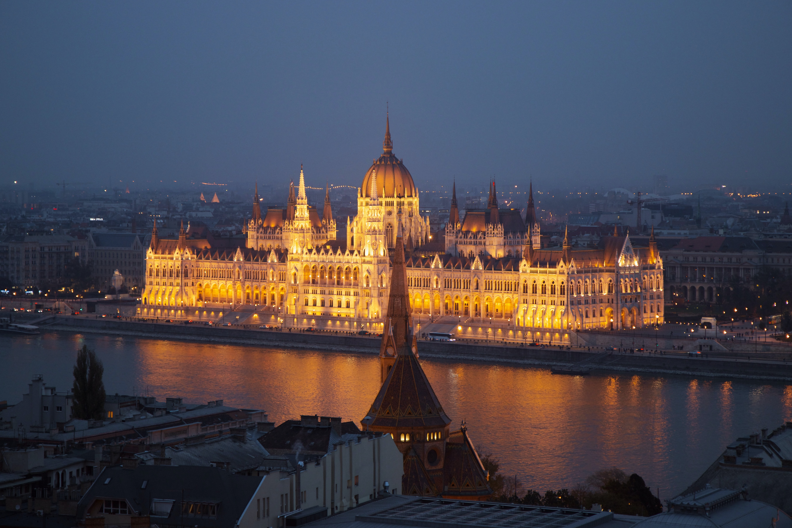

지하철역에서 올라오면 국회의사당 앞으로 정부의 주요 행사가 열리는 널찍한 광장이 있다. 이 광장에는 19세기 오스트리아 합스부르크의 지배에 맞서 헝가리 독립투쟁을 주도했던 코슈트 러요시의 상이 있다. 매년 8월 20일에 이 광장에서 기념식이 열린다. 1989년 헝가리가 사회주의를 버리고 새로운 자유국가로 다시 태어나게 된 역사도 이 광장에서 이루어졌다. 국회의사당은 오스트리아-헝가리 이중 제국 시절 거대했던 국가의 위상에 걸맞게 네오 고딕 양식의 큰 규모로 지어졌다. 1896년 이곳에서 처음 국회가 열렸으며 1902년에 건물이 모두 완성되었다고 한다. 강을 따라 건물의 길이만 해도 268m에 이르고 가운데 돔 위의 첨탑 높이는 96m에 달한다. 이 96이라는 숫자는 머저르 민족이 유럽에 최초로 정착한 896년을 기념하기 위한 것이다. 내부는 벽화와 조각상 등으로 장식되어 있는데 개인 관람은 국회 도서관만 들어갈 수 있다. 지하철 한 정거장 더 가서 강 건너 Batthyány에서 내리면 두나강과 어우러져 더욱 멋지고 웅장한 국회의사당의 모습을 볼 수 있다. 